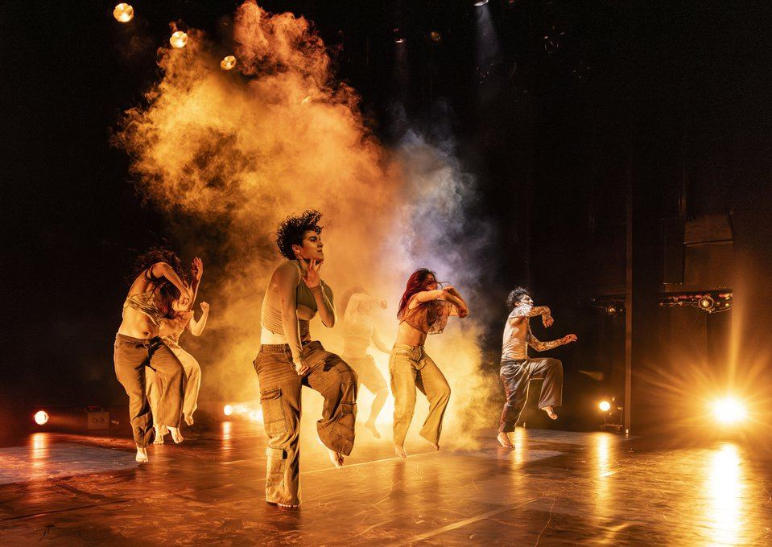

Festivals · Arts
Festival Internacional Teatro a Mil 2027
- Dates
- –
- Location
- Santiago, Chile
- Format
- In-person
- Category
- Arts
- Industry
- Performing arts festival
- Organiser
- Fundación Teatro a Mil
- Expected attendance
- 400,000
- Official website
- https://www.teatroamil.cl/articulos/ostermeier-milo-rau-y-31-minutos-encabezan-teatro-a-mil-2027-con-m%C3%A1s-de-90-obras-de-casi-20-pa%C3%ADses/
About
34th edition; 90+ works from about 16-20 countries, in Santiago and regions (Antofagasta, Valparaíso, Concepción). The site header says 2-27 Jan, likely including side activities. Chile dates are local (mainland Chile time: UTC-3 in the southern summer, UTC-4 in winter; Easter Island is two hours behind the mainland).
Topics: theatre, dance, circus, street performance.
Official past-editions page: the 2024 edition 'logró convocar a más de 400 mil espectadores' in venues and public spaces across 42 comunas (latest organiser figure found; press reports 350,000+ for 2026).